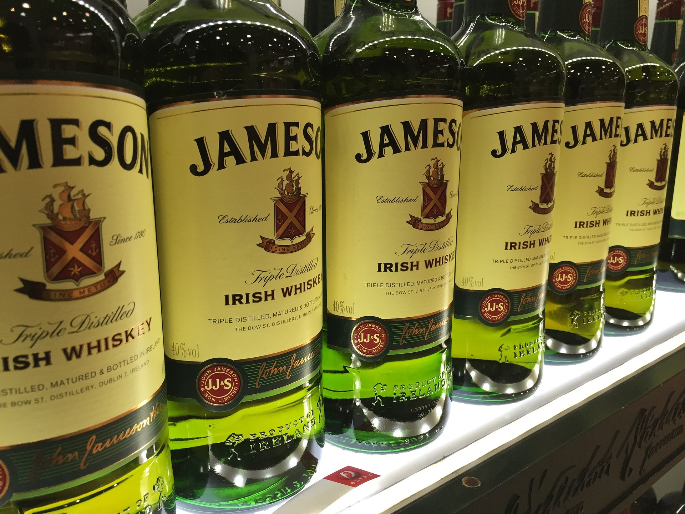

Single malts are typically associated with single malt Scotch, though they are also produced in various other countries. Under the United Kingdom's Scotch Whisky Regulations, a "Single Malt Scotch Whisky" must be made exclusively from malted barley (although the addition of E150A caramel colouring is allowed), must be distilled using pot stills at a single distillery, and must be aged for at least three years in oak casks of a capacity not exceeding 700 litres (150 imperial gallons; 180 US gallons).
